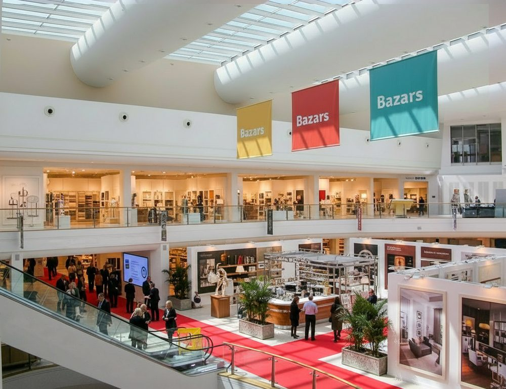
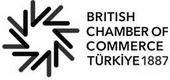

Bazars · Programme 300
跨境 B2B 贸易的基础设施层
Bazars 正在伦敦附近建设一个常设 B2B 展厅枢纽，让中国、土耳其、越南和波兰的入选制造商与英国贸易买家面对面交易，并将支付、合规与物流集中在一处。

计划 300 · 限额 300 家制造商 · 须经引荐与面谈

Bazars 正在伦敦附近建设一个常设 B2B 展厅枢纽，让中国、土耳其、越南和波兰的入选制造商与英国贸易买家面对面交易，并将支付、合规与物流集中在一处。

